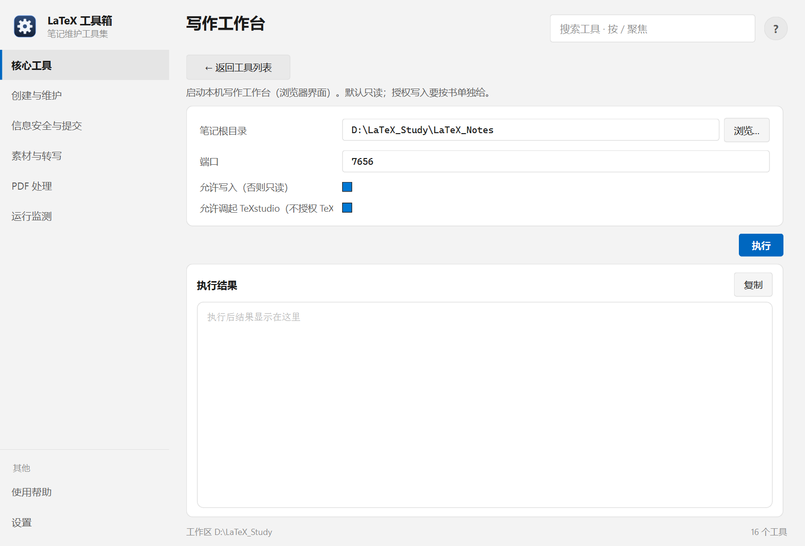

帮助目录 · 核心工具
在本机起一个浏览器界面来写作与预览：左边目录、右边正文，改动直接写回 .tex。默认只读，写入要按书单独授权。
| 面板入口 | 核心工具 → 卡片「写作工作台」→ 填参数 → 执行（会打开浏览器） |
|---|---|
| 命令行 | python tools/progress/workbench_launcher.py |

笔记根目录与端口；「允许写入」默认不勾，勾了还要在下面列出授权哪几本。
LaTeX_Notes），端口一般不用改。| 项 | 说明 |
|---|---|
| 笔记根目录 | 工作台的根；必须是含各书目录的那一层。 |
| 端口 | 默认 7656。被占用时换一个，工具不会去接管别人的端口。 |
| 允许写入 | 总开关。不勾时全部请求只读，任何保存都会被拒。 |
| 授权写入的书 | 逐本授权，逗号分隔。授权状态按书的永久 ID 记录，书改名不会失效。 |
| 允许调起 TeXstudio | 只负责打开文件，不等于授权 TeX 写入。 |
python tools/progress/workbench_launcher.py --no-browser python tools/progress/workbench_launcher.py --config 另一个配置.json
| 内容 | 位置 |
|---|---|
| 启动配置（root / 端口 / 授权） | 便携：tools/progress/workbench_local.json；安装：%APPDATA%\LaTeX-Toolbox\progress\ |
| 书 ID 与写入许可 | 同上配置文件里的 write_book_ids |
| 备份 | 写入前先备份到根目录下的备份区，可在工作台里回滚 |
Q：浏览器打开了但页面空白
A：服务可能没起来。看工具页结果区的日志末尾，通常是端口被占用（换端口）或笔记根目录填错。
Q：保存按钮点了没反应 / 提示无权限
A：没勾「允许写入」，或这本不在授权列表里。授权是按书 ID 记的，换书要重新授权。
Q：端口 7656 被占用
A：换一个端口重开，例如 7657。工具不会杀掉占用端口的进程 —— 那可能是别的程序。
Q：改完发现写坏了，能回滚吗？
A：可以。写入前会自动备份，工作台里有备份列表与恢复入口。
Q：关闭面板后服务还在跑吗？
A：面板起的服务随面板关闭而关闭。用 --no-browser 独立启动的，要用「停止」或关掉那个窗口。